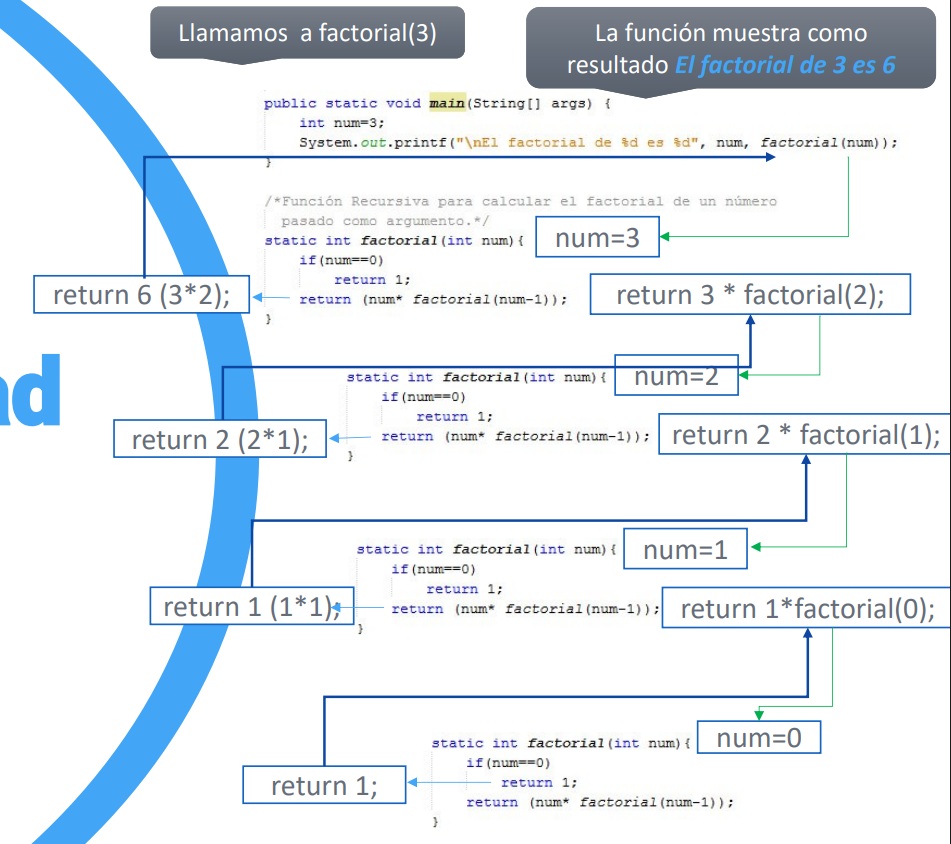

UD5 - Funciones y Recursividad
5.1. Funciones
La mejor forma de mantener un programa extenso es construirlo a partir de pequeñas piezas independientes llamadas funciones o métodos. Permiten dividir el programa en unidades autónomas, reutilizables y más fáciles de mantener.
5.1.1 Declaración
tipoDev nombreFuncion(listaParametros) {
// cuerpo de la función
return valor; // si tipoDev no es void
}
tipoDev— tipo de dato que devuelve la función (int,double,void...)nombreFuncion— nombre de la funciónlistaParametros— parámetros que recibe (puede estar vacía)
5.1.2 Ejemplos
// Función que no recibe parámetros y devuelve un entero
static int metodoEntero() {
return 42;
}
// Función que recibe parámetros y no devuelve nada (void)
static void procedimiento(int num, String texto) {
System.out.println(texto + ": " + num);
}
// Función que recibe dos enteros y devuelve su suma
static int sumar(int a, int b) {
return a + b;
}
// Función void que realiza y muestra la multiplicación
static void multiplicar(int a, int b) {
System.out.println(a + " x " + b + " = " + (a * b));
}
public static void main(String[] args) {
int resultado = sumar(5, 3); // llamada a la función
System.out.println(resultado); // 8
multiplicar(4, 7); // 4 x 7 = 28
}
Funciones dentro de main
Cuando una función se llama desde main, debe declararse como static. Más adelante, con la Programación Orientada a Objetos, veremos cuándo no es necesario.
5.2. Ámbito de las variables
Las variables declaradas dentro de una función son locales a ella: solo existen mientras la función se ejecuta y no son accesibles desde fuera.
static void sumar(int a, int b) {
int num = 2; // variable local a sumar()
System.out.println(a + b + num);
}
public static void main(String[] args) {
int num = 10; // variable local a main()
sumar(3, 4);
System.out.println(num); // 10 → no se ve afectada por la num de sumar()
}
5.3. Paso de parámetros por valor
En Java, los tipos primitivos se pasan por valor: la función recibe una copia del dato. Cualquier modificación dentro de la función no afecta a la variable original.
static void modificar(int x) {
x = 999; // solo modifica la copia local
}
public static void main(String[] args) {
int num = 10;
System.out.println(num); // 10
modificar(num);
System.out.println(num); // 10 → no ha cambiado
}
Salida:
10
10
Arrays y objetos NO se pasan por valor
Los arrays y objetos se pasan por referencia: si los modificas dentro de la función, los cambios sí se reflejan fuera. Esto lo verás con más detalle en la unidad de POO.
5.4. Sobrecarga de funciones
En Java se pueden declarar varias funciones con el mismo nombre en la misma clase, siempre que tengan diferente lista de parámetros (distinto número, tipo u orden).
static int cuadrado(int num) {
return num * num;
}
static double cuadrado(double num) {
return num * num;
}
public static void main(String[] args) {
System.out.println(cuadrado(4)); // llama a la versión int → 16
System.out.println(cuadrado(3.5)); // llama a la versión double → 12.25
}
Java elige automáticamente qué versión ejecutar según el tipo del argumento que se le pasa.
5.5. Manejo de excepciones
Una excepción es un error que ocurre durante la ejecución del programa (por ejemplo, dividir entre cero). Java permite capturarlas con la estructura try-catch-finally para que el programa no se detenga inesperadamente.
try {
// código que puede lanzar una excepción
} catch (TipoExcepcion e) {
// código que se ejecuta si ocurre la excepción
} finally {
// código que se ejecuta SIEMPRE (con o sin excepción)
}
Bloques opcionales
Se puede omitir catch o finally, pero no ambos a la vez.
5.5.1 Ejemplo: división por cero
int a = 10, b = 0, resultado = 0;
try {
resultado = a / b; // lanza ArithmeticException
} catch (ArithmeticException e) {
System.out.println("Error: " + e.getMessage()); // / by zero
} finally {
System.out.println("Resultado: " + resultado); // 0
}
5.5.2 Múltiples catch
Se pueden capturar distintos tipos de excepción en el mismo bloque try:
try {
resultado = a / b;
} catch (ArithmeticException e) {
System.out.println("Error aritmético: " + e.getMessage());
} catch (NullPointerException e) {
System.out.println("Error: referencia nula");
} finally {
System.out.println("Resultado: " + resultado);
}
5.6. Recursividad
Una función recursiva es aquella que se llama a sí misma durante su ejecución. Es una técnica muy usada en algoritmos del tipo Divide y Vencerás.
static tipoDev funcRecursiva(listaParametros) {
// ...
funcRecursiva(listaParametros); // llamada recursiva
// ...
}
Condición de parada
Toda función recursiva debe tener una condición de parada (caso base) que detenga las llamadas. Sin ella, la función se llamaría infinitamente hasta provocar un StackOverflowError.
5.6.1 Ejemplo: factorial
El factorial de un número se define como:
n! = n × (n-1) × (n-2) × ... × 1
0! = 1
static int factorial(int num) {
if (num == 0) return 1; // caso base
return num * factorial(num - 1); // llamada recursiva
}
public static void main(String[] args) {
System.out.println("El factorial de 3 es " + factorial(3)); // 6
}
5.6.2 Cómo se ejecuta paso a paso

factorial(3)
│
├─► 3 * factorial(2)
│ │
│ ├─► 2 * factorial(1)
│ │ │
│ │ ├─► 1 * factorial(0)
│ │ │ │
│ │ │ └─► devuelve 1 ← caso base
│ │ │
│ │ └─► devuelve 1 (1 × 1)
│ │
│ └─► devuelve 2 (2 × 1)
│
└─► devuelve 6 (3 × 2)
Recursividad vs iteración
Todo problema recursivo se puede resolver también con bucles (iteración). La recursividad es más elegante y legible para ciertos problemas (factorial, Fibonacci, recorrido de árboles...), pero consume más memoria al acumular llamadas en la pila.
Resumen de la unidad
| Concepto | Clave |
|---|---|
| Declarar función | static tipoDev nombre(params) { } |
| Función sin retorno | void como tipo de retorno |
| Variable local | Solo existe dentro de su función |
| Paso por valor | La función recibe una copia; el original no cambia |
| Sobrecarga | Mismo nombre, distinta lista de parámetros |
| Excepción | Error en tiempo de ejecución |
| Capturar excepción | try { } catch (Excepcion e) { } |
finally |
Se ejecuta siempre, haya o no excepción |
| Función recursiva | Se llama a sí misma; necesita caso base |
| Caso base | Condición que detiene la recursión |